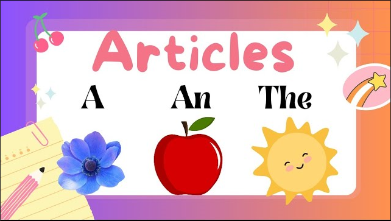

GRAMMAR ARTICLES
GRAMMAR ARTICLES
Articles
Article, a grammar element used to indicate definiteness or indefiniteness. It is also a piece of nonfictional prose that is an independent part of a publication.
There are two types of articles.
- Definite article
- Indefinite article
Definite article
Definite article (the) is used to identify a specific noun or group of nouns.
- 1 - The books assigned for this class are very useful.
- "Books" is plural, countable, and specific due to “for this class.”
- 2 - The advice you gave me was very helpful.
- "Advice" is uncountable but specific due to “you gave me.”
Indefinite article
Indefinite articles (a, an) identify general nouns or unknown identities.
- 1 - I do not own a car.
- "Car" is singular, countable, and not specific. Could be any car.
- 2 - I would like to eat an apple.
- "Apple" is singular and non-specific. Could be any apple.

PROFILE CARD
About Naila
CS journey
I chose Computer Science because it has endless opportunities. I am excited to learn new things. Looking forward to the amazing future ahead! InshaAllah
Contact